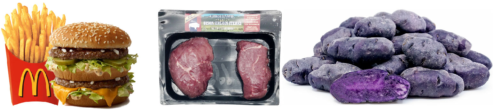
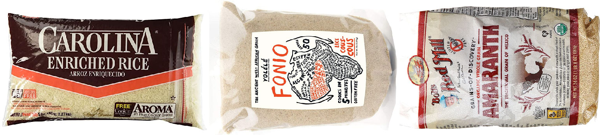
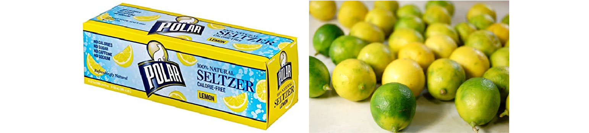
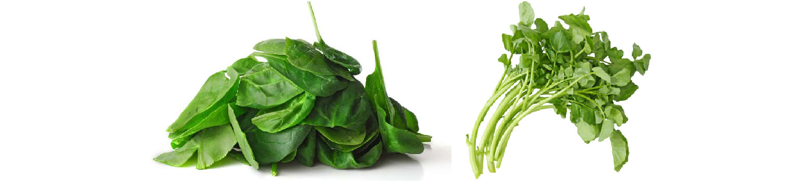
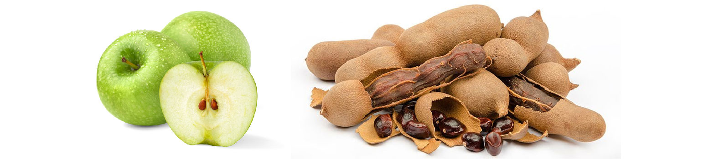
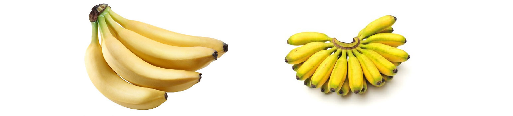
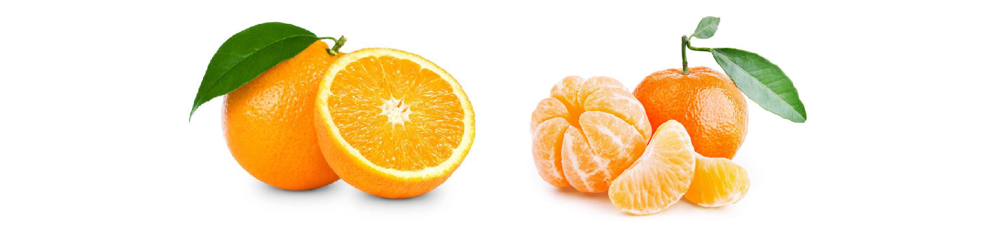
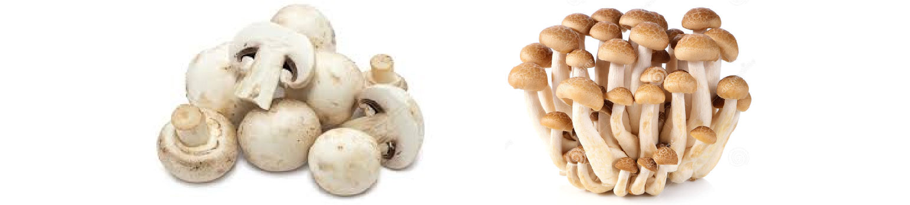
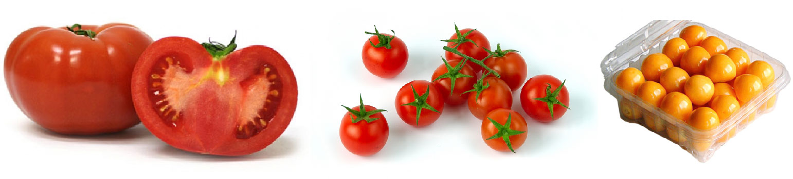
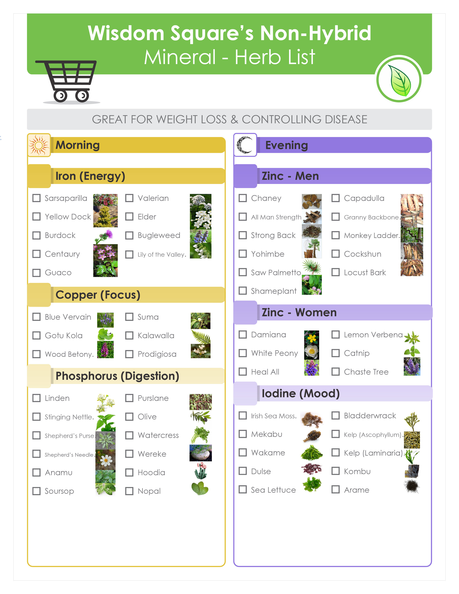

How Much More Does it Cost to Eat Healthy?
Price holds a lot of people back from eating healthy.
So let's take an honest look at the difference in cost in a side-by-side comparison between different categories of food.
Note that price is just one of five things that make losing weight and eating healthy seem impossible for many people. These five issues are what I hope to address on this blog:
1. Too costly
2. Limited selection based on where you live
3. Cooking is too time-consuming
4. Emotional eating = unhealthy eating
5. Dieting works as long as you stick with it, even if you stop losing weight all of a sudden
I can't afford this...
I can't get that where I live...
There's not enough time in the day...

Below is a comparison between common engineered food (on the left) vs. natural organic food (on the right). The food on the right shows the healthier choice, which means it is easier to digest and is more nutrient-dense.
1. Big Mac & Fries vs. Bison Steak & Purple Potatoes

Time: 25 min. drive vs. 25 min. cooking
Cost: $5.79 (2 beef patties, 3.2 oz total) + $2.69 (medium fries, 4.13 oz)
vs.
$15.99 (2 Bison steaks, 12 oz total) + $1.25 (purple potatoes, 8 oz)
Location: McDonald's vs. Whole Foods + Asian or Latin Market
Note: Typically meat, especially quality meat, is much more expensive than vegetables. In this case, the home cooked meal is almost twice as expensive. But with the home cooked meal you're actually getting enough for two servings! Not bad I would say.
2. White Rice vs. Fonio or Amaranth

Cost: $4.99 per 80 oz vs. $39.99 per 80 oz or $33.47 per 96 oz
Location: Stop & Shop vs. Amazon
Note: The healthiest option is in fact 8 times more expensive. This is an extreme example because of how common rice is and how rare Fonio is. A bit less rare is Amaranth, which is still about 5.6 times more money than common rice unfortunately.
3. Oatmeal vs. Teff
Cost: $5.79 per 42 oz vs. $26.77 per 96 oz
Location: Stop & Shop vs. Amazon
Note: Here the difference isn't as much. Teff is about twice as expensive as Oatmeal, but is much healthier.
4. Sparkling Water vs. Key Lime Water

Cost: $5.39 per 144 fl oz vs. $17.50 per 5 lbs (about 81 key limes)
Location: Stop & Shop vs. Amazon
Note: Squeezing about 5 key limes into 1 liter of filtered water is simple to do and would yield about 541 fl oz of flavored water. Which makes the key limes a bit less expensive than the sparkling water.
5. Yellow Onion vs. Red Onion
Cost: $1.49 per 16 oz (1lb) vs. $1.49 per 16 oz (1lb)
Location: Stop & Shop vs. Stop & Shop
Note: In this case, both options are at the same price. So why not go for the one that's a bit healthier.
6. Spinach vs. Watercress

Cost: $3.99 per 16 oz vs. $2.99 per 4 oz
Location: Stop & Shop vs. Stop & Shop
Note: Watercress is about 3 times more expensive, but has about 2 times more iron and far less oxalate acid, which blocks the body's ability to absorption calcium. This is why I'm not the biggest fan of spinach, especially in large amounts everyday.
7. White Sugar vs. Coconut Syrup

Cost: $3.19 per 64 oz vs. $6.99 per 12 fl oz
Location: Stop & Shop vs. Whole Foods
Note: White Cane Sugar is just about the worst. It is unfortunate that white cane sugar is also about 12 times less expensive.
8. Apples vs. Tamarind

Cost: $1.99 per 1lb vs. $4.49 per 1lb
Location: Stop & Shop vs. Asian or Latin Market
Note: A little more than twice the price, Tamarinds can either be a sweet or sour treat. Similar to sweet or sour apples. Tamarind can be steeped in hot water to make Tamarind Juice, which is much more nutritious than Apple Juice.
9. Cavendish Bananas vs. Thai Bananas

Cost: $0.59 per 1lb vs. $1.29 per 1lb
Location: Stop & Shop vs. Asian or Latin Market
Note: Yes, you can find some great deals on bananas. But have you noticed how flavorless they actually are? This should be a hint as to its nutritional value. Try any "baby-sized" banana and see how much more flavor they have and healthier they are.
10. Oranges vs. Mandarins

Cost: $5 per 3 lbs vs. $5 per 3 lbs.
Location: Stop & Shop vs. Stop & Shop
Note: In this case, both options are at the same price. So why not go for the one that's a bit healthier.
11. Button Mushrooms vs. Beech Mushrooms

Cost: $2.99 per 14 oz vs. $2.49 per 3.5 oz
Location: Stop & Shop vs. Asian Market
Note: At around 3.3 times more money, Beech Mushrooms are a bit more per ounce. Still, I believe it to be worthwhile. According to Paul Statents, who has extensively studied mushrooms practically his entire life, came to the conclusion that consuming raw Button, Cremini, or Portobello mushrooms may cause tumors to develop in the body.
12. Peanut Butter vs. Tahini
Cost: $5.49 per 40 oz vs. $7.99 per 11 oz
Location: Target vs. Nuts.com
Note: Tahini Butter, made from Sesame Seeds, may be about 5.3 times more expensive, but they don't come with the risk of someone potentially having a food allergy or sensitivity towards it. Even if someone isn't outright allergic, sesame seeds are pound for pound more nutrition than peanuts.
13. Cultivated Fresh Blueberries vs. Wild Frozen Blueberries
Cost: $3.99 per 16 oz vs. $3.00 per 15 oz
Location: Stop & Shop vs. Target
Note: This time, the healthier option could actually be a bit cheaper. Next time you get the chance, just look at the difference in size between cultivated blueberries and wild ones, which are claimed to contain at least 2x the antioxidants. Depending on where you go, the frozen wild ones might even be a bit cheaper than the fresh cultivated ones. The other plus from purchasing frozen fruit is that they are picked when they're closer to ripening, and the freezing process doesn't degrade the nutrition. If anything, it just helps to keep them for longer than fresh blueberries left in the fridge.
14. Beefsteak Tomatoes vs. Cherry Tomatoes vs. Golden Berries

Cost: $3.99 per 1 lb vs. $3.99 per 1lb vs. $3.99 per 6 oz
Location: Stop & Shop vs. Stop & Shop vs. Stop & Shop
Note: Since the smaller cherry tomatoes can sometimes be the same price as the larger beefsteak tomatoes, it's best to go with them. As soon as you cut them open you can smell how much more fragrant they are, which is an indicator for the overall health and nutrition of it. Golden Berries are about 2.6 times more expensive, but their flavor and nutrition in my opinion make up for it.
15. Adobe Spice Blend vs. Celtic Sea Salt + Grains of Paradise + Oregano
Cost: $2.17 per 16.5 oz vs. $6.99 per 8 oz + $6.99 per 2.26 oz + $1.29 per 0.5 oz
Location: Walmart vs. Amazon + Vitacost.com + Walmart
Note: Adobo may be much cheaper than buying the best version of each individual ingredient, but Adobo unfortunately comes with a few things we don't want. Tricalcium Phosphate, which is used to prevent the dry mix from absorbing moisture and clumping together. And Iodine Salt, which according to Dr. Leonard Coldwell contains: 1/3 salt, 1/3 sand, and 1/3 glass which scratches and irritates the blood vessels.
16. Hydrogenated Palm Oil vs. Cold-Pressed Palm Oil
17. Olive Oil vs. Grape Seed Oil
18. Yogurt Probiotics vs. Coconut Probiotics
At this point, you might be thinking what a shame! The economic tables are stacked against us. And while that may be true, there's still one thing that's not yet being compared which helps to make things a bit more even. And that's the fact that you end up buying less of the healthy foods.
In general, even if you cook at home and try to fill your stomach with as much food as it can expand to... you still end up eating more than if you were to with more nutritious food.
Just try filling up on white rice alone and see how long you're satisfied with that.
With more nutritious food you end up eating less, and buying less. After all, your body is actually craving nutrients when you feel hungry. Quality matters more than quantity.
Fun side-note: once you learn about a new food and begin thinking about it, you might get surprised at how you start to suddenly notice it around you. Sometimes it might show up at your favorite grocery store and other times it's not far away at an Asian or Latin market you just haven't visited yet. I always have a lot of fun going someplace new to see what pops up.
Why would these small changes matter?
Yes, the process of searching for a new food that has the potential of improving your health and taking the time out to prepare it can be very rewarding. Especially when it tastes better than pre-packaged food. Eating healthy can and should be exciting and full of flavor.
Now, of course going from McDonald's to cooking at home makes a huge difference.
So would finding a healthier sugar substitute, if you're still using sugar.
But what most people don't realize is that our bodies have evolved over time to easily digest certain food... aka "naturally organic" or "non-hybrid" food.
Today however, most food in large chain-grocery stores have been modified within the last couple hundred years, some within the last couple decades.
Now of course everyone is different, so there's no "one-size-fits-all" here. But in general, if a person is allergic or even sensitive to a certain food... the ancestor of that food might just have no ill effect.
This is most obvious with people that have a gluten-sensitivity from eating wheat. Even I feel tired after having wheat bread. But wheat's ancestor, Einkorn, allows many people that otherwise have a gluten sensitivity to eat it. In my case, I often bake home-made bread and never feel tired from eating it. And I only invest a few minutes of actual prep work to make it. This alone is huge for some people. But it doesn't stop there.
Even if someone isn't immediately allergic to a food, so many of us are instead potentially sensitive to a food. Whether it's peanut butter or even carrots. Many people slowly develop a skin condition or recurring headaches over time without ever realising the cause. It's not until they stop eating it before they see a symptom go away. If you're suffering from a certain symptom that the doctors aren't able to pinpoint, then I strongly recommend slowly removing or replacing certain foods to determine if you have such a sensitivity. There are also test kits that might work for you if you want to dive even deeper into this.
Now for my favorite part. This next section might completely change the way you view health for good, like it has for me.
Are we Malnourished, Despite Eating Healthy?
One day, my best friend asked me:
"Why does my niece constantly get sick and need to visit the doctor when her parents have always fed her fresh and organic food?"
At the time, this question really bothered me. If you follow the advice we're given to eat healthy, then technically you shouldn't get sick often or at all.
Since then, I've learned the biggest missing piece of the health puzzle. Plants can't produce the minerals our bodies need to thrive on their own. The minerals have to first be present in the soil.
This might not seem like much. But this is what caused me to shift from seeking "organic" to seeking "wild-crafted" or "wild-harvested."
This eventually led me to the plentiful world of herbs.
Why are they so largely unknown in the Western World, despite having such a long history of amazing benefits.
And more importantly, why are you not supplementing with some of them as a part of your routine?
To be more specific, it's impossible to get even close to all of the 90 possible minerals our bodies can utilize while conventional farming only replenishes the soil with the bare minimum, 3 minerals.
I don't want to keep any secrets from you, so here is what I've discovered to be the most potent, non-hybrid, herbs available.

Each herb listed above may be found by googling the name with the word "tincture" after it. If one is not currently available as a tincture, then you can still find a bulk bag of it dried to be used to make tea... or even a mind-blowingly healthy soup base!
Now, I know I've probably just introduced a lot of new concepts which may become a bit overwhelming. But here's the thing, you're not going to change everything overnight. This is a life-long journey towards maximizing your health. The focus should always be on progress, and not perfection.